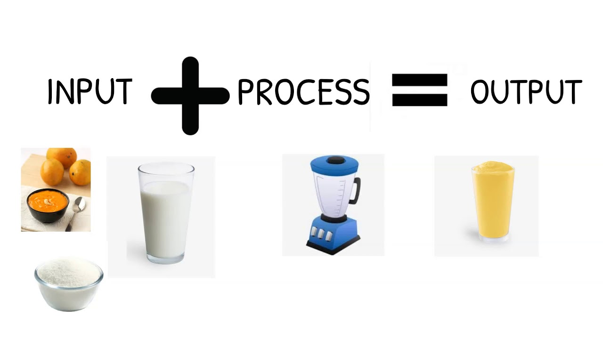
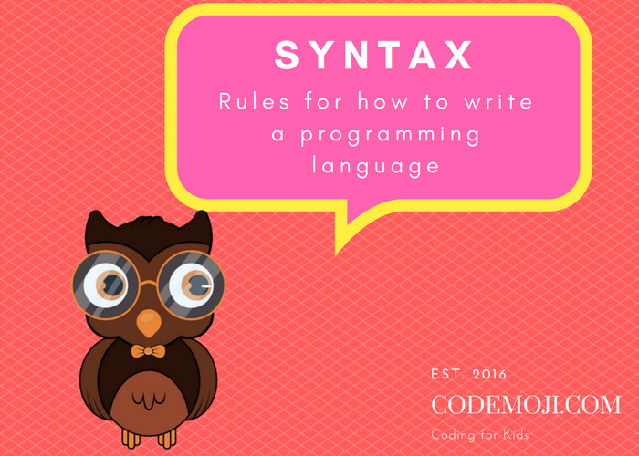
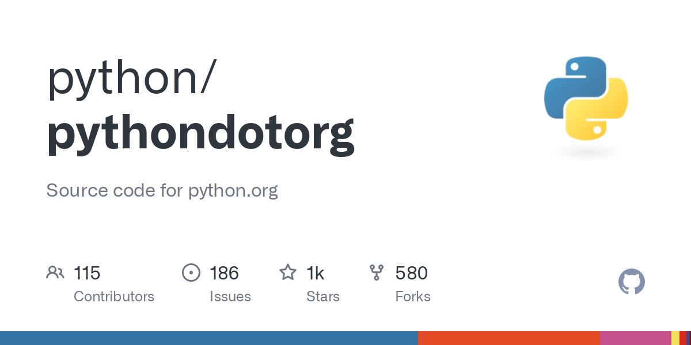

Hello and welcome to our first course here (stage 1). We want to thank you for your visit, your love for learning and passion is respected.
In your life, never do something without your OWN will, yes maybe our guardians may want us to do something we do not enjoy, and yes maybe our surrondings want us to be like them, want us to do something they enjoy and not us, but we always should see the best for us first and what makes happy and satisfied, and then we can look-out and take advices from others. We want you here confident, passionate, and most importantly happy.
Course syllabus:
1- Introduction to python and some of its syntax2- Overview of web development with python
3- Our first project
4- Arthmetic operations
1- Introduction to python and some of its syntax
Python is a multi-purpose programming language, it can be used in web development (developing websites), machine learning (robotics), server and data handling...
Python is widely used among developers, since it is one of few languages that is actually easy and not complicated (like java,c,c#...)
That's why we chose as our programming language!
Even this site has a lot of python scripts!
In computers there are two types of the things that computers can do, these are outputs and inputs, outputs are everything that is displayed (on monitors, screens, laptops...) the input is what we type, or what we give the computer for it to be processed.

In programming, the vocabulary (words that make up sentences) is called syntax (so technically the one who knows the syntax, knows the language). We as developers tend to learn this syntax, and since it's very easy, it’s a simple task.

Before we start learning the actual syntax, there is something I want you to do. Firstly, go ahead and install an IDE so that you can work with code, i recommend Visual Studio Code. Secondly, go to the offical python website and download the latest version of python.


1-Print command:
the print command is used to display anything you want on the screen (your output)
print("whatever you want")
you can aslo add .lower() and .upper() with your print command, to make your output all lowercase letters(.lower()) or uppercase letters (.upper()) you can add that in the following way:
print("something".lower())
print("something".upper())
2. **input()**: The `input()` function allows the program to receive input from the user. It displays a message and waits for the user to enter some text. The program can then use this input and display it.
python
name = input("What is your name? ")
print("Hello, " + name + "! Nice to meet you!")
In this example, the program asks the user to enter their name. Whatever the user enters will be stored in the `name` variable. The program then displays a personalized greeting using the entered name.
3. **len()**: The `len()` function is used to determine the length or size of a string, list, or any sequence of elements. It returns the number of characters in a string or the number of elements in a list. Here's an example:
python
message = "Hello, World!"
length = len(message)
print("The length of the message is:", length)
In this example, the program calculates the length of the string stored in the `message` variable using the `len()` function. It then displays the length of the message using the `print()` function.
2- Overview of web development with python
1. **HTML**: HTML stands for Hypertext Markup Language. It's like the skeleton of a web page. HTML uses tags to structure and define the content of a web page. Tags are like instructions that tell the web browser how to display different elements, such as headings, paragraphs, images, and links.
2. **CSS**: CSS stands for Cascading Style Sheets. It's like the decorator of a web page. CSS is used to control the look and feel of HTML elements. It allows you to change the colors, fonts, sizes, and layout of your web page. With CSS, you can make your web page beautiful and visually appealing.
3. **Python**: Python is a programming language that can be used for web development. It provides powerful tools and frameworks for building dynamic and interactive web applications. Python allows you to write code that runs on the server-side to process data, handle user interactions, and perform various tasks.
4. **Web Frameworks**: Web frameworks are libraries or tools that make web development easier. They provide pre-built functions and structures that help you quickly create web applications. Popular Python web frameworks include Django and Flask. These frameworks handle things like URL routing, database interactions, and user authentication, so you can focus on building the core functionality of your web application.
5. **Back-End and Front-End**: In web development, we often talk about the back-end and front-end. The back-end refers to the server-side of the web application. It handles the logic, data processing, and communication with databases. Python is commonly used for back-end development. The front-end refers to the client-side of the web application. It involves creating the user interface and handling user interactions. HTML, CSS, and JavaScript are used for front-end development.
6. **Database**: A database is a place where you can store and organize data for your web application. Python can connect to databases and perform operations like storing, retrieving, and modifying data. Common databases used with Python web development include SQLite, MySQL, and PostgreSQL.
These were the basis of web development, in this course we are not gonna go deeper in them, it's just and overview for you.
3- Our first project
Now that you know how to print, take input, and combine those two values together in one sentence, we can build a small project from it!
name = input("What is your name?")
mood = input("How are you know (sad, angry, happy...)?")
print(name, "is" , mood)
4- Arthmetic operations
In Python, we can perform different arithmetic operations to manipulate numbers. Here are some common arithmetic operations:
--Addition (+): Adding two numbers together.
Example: 2 + 3 = 5
--Subtraction (-): Subtracting one number from another.
Example: 5 - 2 = 3
--Multiplication (*): Multiplying two numbers to get the total.
Example: 2 * 3 = 6
--Division (/): Dividing one number by another to find out how many times it fits.
Example: 6 / 2 = 3
--Modulo (%): Finding the remainder after division.
Example: 7 % 3 = 1 (The remainder when dividing 7 by 3 is 1)
It's that simple to do math in python.